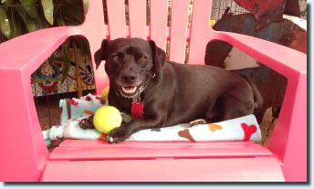
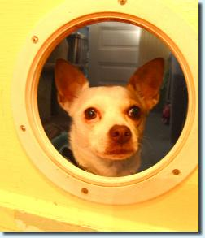
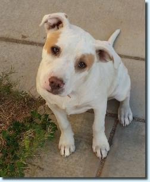

Please take a few moments to read:
If you have questions about a specific pup, please feel free to email us:
LuckyPupDogRescue @ gmail .com
If there is a dog you are interested in meeting,
we must have an application on file before we set a time to meet.
We can set up a meet & greet after
we have your completed application and our staff has had time to review it.
Our pups live in foster homes located around San Diego.
We do not have a central facility where our dogs live.
We are volunteers, with jobs, families and busy schedules.
To help save time, we ask that you bring all family members, roommates,
everyone who lives in the home to the meeting, including your other dog(s)
if they are going to be part of the decision. We usually meet in a park nearby.
It helps to streamline the adoption process and to make sure it's a great fit for everyone.
Our adoption process is simple:
we require an approved application, home check
and a minimum $200 donation to our rescue. (Puppies $ 250)
All of our wonderful dogs have been lovingly rescued, nursed back to health.
They have been seen by a vet, are neutered/spayed, up to date on shots, wormed & flea meds and have microchips. Your donations help us buy food, pay for vet visits, transportation from San Bernardino County, blankies, teeth cleaning, extractions, shots,
blood tests, flea meds, worming, grooming,
pulling teeth, broken bones, knee surgeries, boarding and all the things our pups
need to get ready to be adopted into their forever home.
Some of our pups may stay with us for many, many months before they find the perfect home.
We make every effort for a great happily ever after.
Please know that not every dog is a good fit for every person, family or situation.
An application or meet & greet does not a guarantee an adoption will take place.
WE ARE A VOLUNTEER BASED 501c3 DOG RESCUE * IRS EIN. # 90-0753223
About 2 years old, a 15 pound
terrier, playful, loves to chase tennis balls, he has a bit of seperation anxiety,
needs someone who has the time to spoil him. .Great on a leash, best kisses
He's 2 years old, snuggly, polite little guy. 25 pounds.He was actually born in the rescue's office ! He's a chi/beagle mix, can be a bit shy at times. Very afraid of the garbage man!
She's our resident fun, sheDevil! She's a terrier inside and out, 10 pounds of princess on paws. Best in a quiet home with only one other dog at the most. Happy and playful. Not good with children, and can be a little barky at first. Nobody is perfect, right?
He is so handsome! A little pug, and and little terrier, cute underbite. Very busy, loves to walk on a leash, great with other dogs, very social and busy. He weighs about 20 pounds.
Named after our beloved Chive family "Keep Calm and Chive On".
She is a mix, a little pit, a little shepherd, some boxer..so very pretty! Only weighs about 25 pounds. She is pure love and so much enthusiasm for life. Needs an active adopter.She is a small girl with lots of big energy.
Puppy Love! Almost a year old, Chi/Corgi mix. Playful and busy. Loves to chase tennis balls. Very active! She weighs about 25 lbs. Loves the other pups. Would love a buddy.
Pretty little Chi mix. She is about 2 years old. Weighs about 10 pounds.Super friendly, loves to snuggle. Great with other dogs, fabulous on a leash, potty trained.
Spaniel mix, such a pretty redhead! Lovable and affectionate. He weighs about 25 pounds. About 2 years old. He loves the other pups and needs an active home with someone with lots of time to spoil him. He has cherry eyes.They were repaired, but returned.

Pure devotion! Chi/Doxie B&W. Loves his tennis balls, loves to go to the park and for long walks. He barks at first meeting, but warms right up. Big loveable lap dog.
Weighs about 20 pounds

He is about 5 years old, pure Chi. Easy guy to love. Loves to walk on leash, snuggle and sleep, sleep, sleep. Personality plus! 7lbs. He is on a special diet for bladder stones. In great health. Just had a dental.

Adorable pit bull girl,almost two years old, weighs about 45 lbs.Potty trained, great with kids, loves people. Penny loves to walk on a leash and snuggle. She needs a yard, and would do best with an active adopter who has had experience with her special breed.
She is not good with all dogs or cats. She would be best as an "only" princess dog!